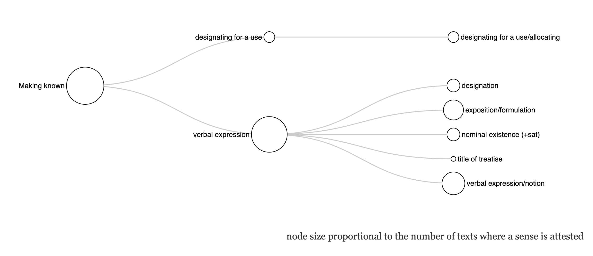
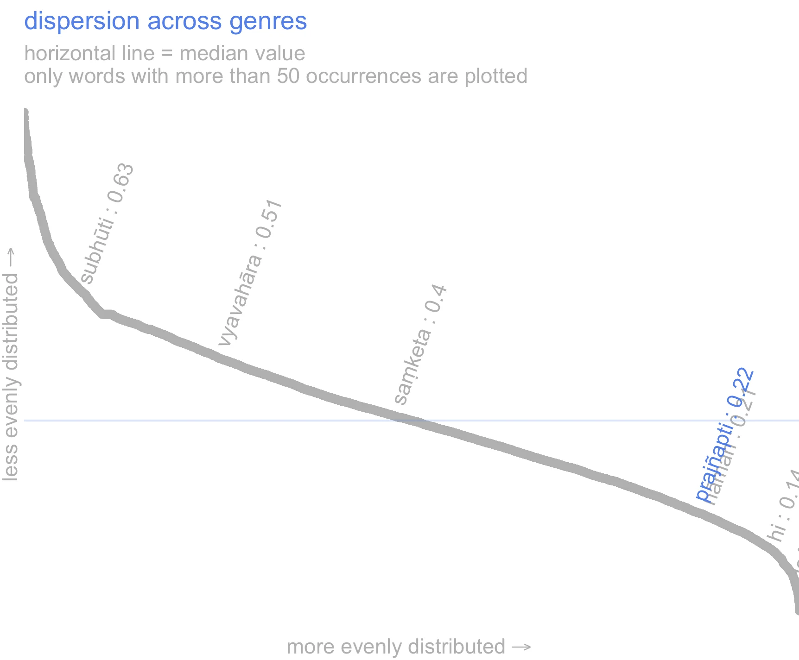
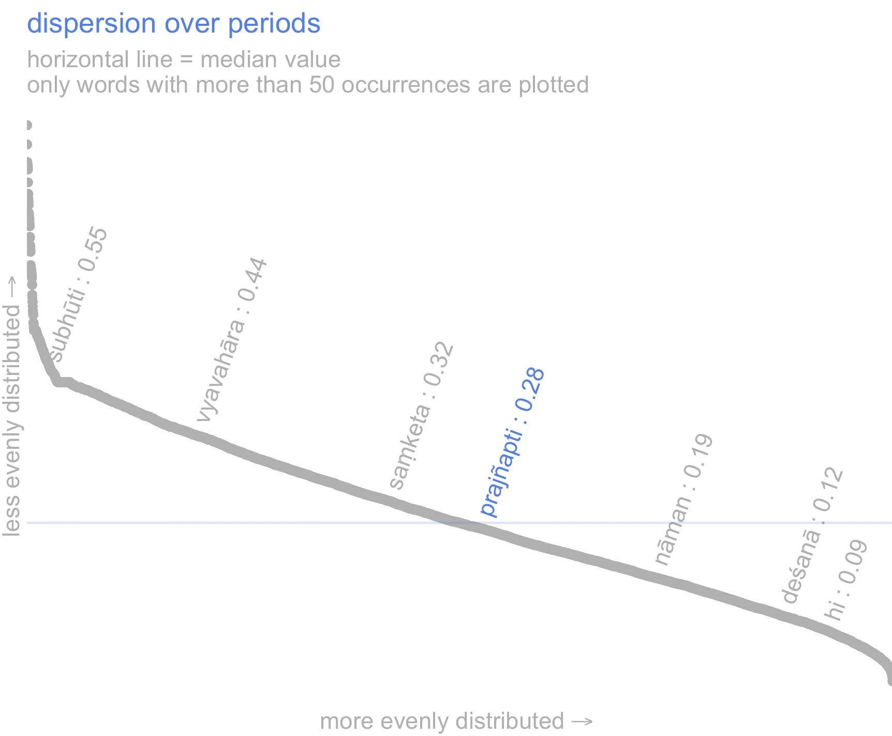
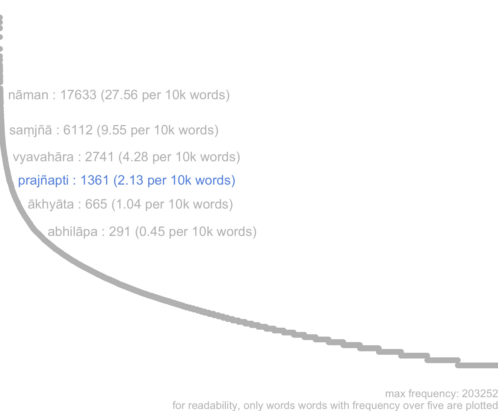
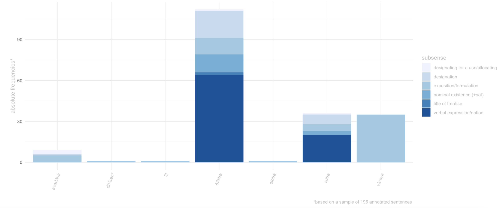
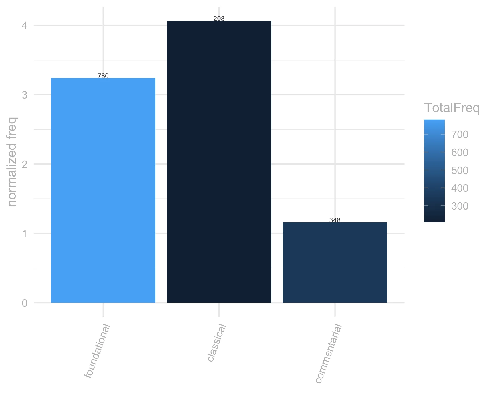
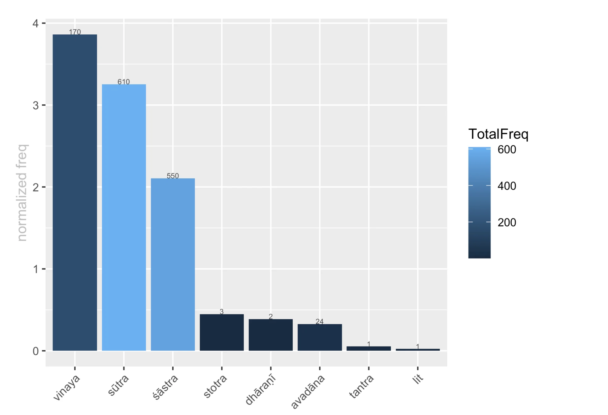

4 prajñapti
4.1 overview
“Does the pudgala exists as a real entity or as a nominal construct? If a person is a distinct entity like visible form and other such things, he is substantially real; but if [by analysis] he is [shown to be] a collection [of substances], like milk and other such things, he is real by way of a conception.” [Duerlinger 73]
The core meaning of prajñapti (also spelled prajñāpti) is close to its etymological sense, which conveys the idea of ‘making known’. In our corpus, this broad sense finds two main semantic applications, the closely related meaning of verbal expression and the derived sense of designating something for a specific use (designating for a use/allocating), which typically refers to allocating seats to participants in an assembly (e.g Divyāvadāna, 468.017). 1
The former sense is by far the most widespread and semantically nuanced. It comprises several different uses, all of which stand on continuum between verbal expressions and their cognitive counterpart, that is, concepts and notions, e.g. Abhidharmakośabhāṣya, 140. 2
This latter use (labelled verbal expression/notion), finds a specialized application in the Buddhist ontological discourse, especially (but not exclusively) in abhidharmic contexts, where it comes to denote the merely conceptual nature of phenomena ,or nominal existence (+sat). In this sense, prajñapti is typically compounded with sat and contrasted with dravya-sat, e.g. Abhisamayālaṃkāra, 5.5. 3
In contrast to this specialized meaning, the sense of prajñapti as verbal expression is much broader. It encompasses one-word designations (e.g. Mahāvastu, 1.351) 4 as well as statements and lengthy expositions, such as the exposition/formulation of teachings and monastic rules (e.g. Bhikṣuṇīvinaya, 179). 5 In this sense, prajñapti features in the title of several works and in our corpus it appears to refer to the title of a treatise in particular, e.g. Abhidharmakośabhāṣya, 419) 6
The boundaries between these uses of prajñapti tend to be blurry. The semantic categorization we provide is, at best, porous, as it is often impossible to determine whether in a given passage this word refers to a designation, a notion or an entity that is only taken to exist nominally.

4.2 frequency
prajñapti is a mid-frequency word in our corpus (see frequency graph below). While its dispersion over genres is relatively even when compared to other words in our corpus (see graphs on the right),

the graph in the next section shows that prajñapti is in fact mostly attested in vinaya, sūtra and śāstra literature; whereas it is extremely rare in other genres.
An analysis of the the distribution of its senses reveals further differences in the use of prajñapti across genres (see sense by genre tab).
The sense of exposition/formulation, which is perhaps the closest to the core meaning of the headword, is the only one to be attested in all genres. By contrast, the sense of verbal expression/notion, which is responsible for most attestations of prajñapti in the sample of sentences that we have manually annotated for the dictionary, is limited to śāstra and sūtra material.
Prajñapti’s dispersion over periods is very similar to its dispersion over genres; but it is more in line with the diachronic dispersion of other words in our corpus, which tend to be more evenly dispersed across periods than across genres (see genre dispersion graph on the right).

Nevertheless, prajñapti’s normalised frequency drops noticeably in the later ‘commentarial’ layer of the corpus, which dates from the VI century onwards (see frequency by period tab).
Frequency and dispersion are calculated over the ~7-million words Segmented Corpus of Buddhist Sanskrit (10.5281/zenodo.3457822).
Dispersion is calculated with Gries’ deviation of proportion formula (Gries, S. 2008. Dispersion and adjusted frquencies in corpora. International Journal of Corpus Linguistics, 13(4): 403-437)



frequency and dispersion are calculated over the ~7-million words Segmented Corpus of Buddhist Sanskrit (10.5281/zenodo.3457822), as opposed to the smaller corpus used for the Visual Dictionary and Thesaurus of Buddhist Sanskrit (see dictionary documentation for details).
For the sake of readability, only words occurring at least 5 times in the corpus have been plotted on the frequency and dispersion curves.
Dispersion is calculated with Gries’ deviation of proportion formula (Gries, S. 2008. Dispersion and adjusted frquencies in corpora. International Journal of Corpus Linguistics, 13(4): 403-437).
the sense by genre plot is based on a sample of sentences that we have manually annotated with semantic information for the Visual Dictionary and Thesaurus of Buddhist Sanskrit. For details about our sampling and annotation procedures see the dictionary documentation page.
4.3 register
register
Overall, the distribution of prajñapti over the genres points to a rather formal register and a predominantly scholastic use.
Even the sense of designating something for use, which recurs in storytelling settings, appears to be crystallized in a formula and lack the contextual malleability of general-language words.
The meaning of exposition/application, too, has a formulaic flavor in the Vinaya (see examples from the Bhikṣuṇivanaya) where it denotes the codification of rules, a meaning that emerges also in other genres, where prajñapti expresses a sense close to the English ‘precepts’ (e.g. Bodhicāryāvatara, 2.63).
Finally, the specialized use of prajñapti + sat has terminological value, as it corresponds to a specific node in the Buddhist ontological system. Uses of this word without sat in Mahāyāna homiletic contexts, such as in statements to the effect that all is ‘mere prajñapti’ (e.g. Laṅkāvatāra, 68: prajñapti-mātrān tribhavaṃ n^āsti vastu-svabhāvataḥ), may echo prajñapti’s terminological use, but appear to have a less precise denotation and are likely to mean simply verbal expression or notion.
The height of the bars in the charts indicates the normalized frequency of the lemma per 10,000 words, the colour of the bars indicates the absolute frequency. The brighter the colour, the highest the absolute frequency of the lemma. The absolute frequency of the lemma is also reported in the numbers on top of each bar.
The texts are arranged in decreasing order of absolute frequency, left to right. The height of the bars in the charts indicates the normalized frequency of the lemma per 10,000 words, the colour of the bars indicates the absolute frequency. The brighter the colour, the highest the absolute frequency of the lemma. Hover on bars to see title and frequency information.

Frequency is calculated over the ~7-million words Segmented Corpus of Buddhist Sanskrit (10.5281/zenodo.3457822), as opposed to the smaller corpus used for semantic annotations in the Visual Dictionary and Thesaurus of Buddhist Sanskrit (see dictionary documentation for details).
The height of the bars in the charts indicates the normalized frequency of the lemma per 10,000 words, the colour of the bars indicates the absolute frequency (i.e. the relative size of the texts/corpus in which the word occurs is not taken into account). The brighter the colour, the highest the absolute frequency of the lemma. The absolute frequency of the lemma is also reported in the numbers on top of each bar.
4.4 context
Prajñapti’s polysemy is reflected in the variety of contexts in which it occurs.
The sense of designating something for a use is typically instantiated in passages describing the preparations made for hosting an assembly and accompanied by the collocate āsana, although a wider range of words can be governed by prajñapti in this sense (see also the cognate prajñapta, which expresses a similar sense).
In the specialized sense of nominal existence, prajñapti occurs in the context of ontological discussions, where it is usually contrasted with dravya and accompanied by sat, as well as words associated with key Buddhist ontological issues, such as pudgala and skandha.
A similar, but broader context frames prajñapti’s instantiations of the senses verbal expression/notion and designation, both of which typically occur in passages related to the Mahāyāna discourse on language. Here, prajñapti tends to be accompanied by the usual lexical markers of Mahāyāna reflections on reality, such as dharmatā and mātra, as well as by its near-synonyms saṃjñā, vyavahāra and saṃketa. In this regard, it is important to note that while prajñapti is semantically and contextually close to both vyavahāra and saṃketa, the idea of conventionality is less central to prajñapti than to these two words. Contrary to vyavahāra and saṃketa, prajñapti foregrounds the purely communicative aspect of verbalization, rather than its social and transactional dimensions.
Bodhicaryāvatāra (2.63: prakṛtyā yac ca sāvadyaṃ prajñapty^āvadyam eva ca): ‘péché contre la loi naturelle, péché contre les lois de la Confrérie’.
The meaning of ‘precepts’, or more generally exposition/formulation, is the most widely spread of prajñapti’s senses in our corpus, and it is especially prominent in the context of vinaya literature
Verses that contrast prajñapti with prakṛti have sometimes been taken as evidence for interpreting this lemma as denoting what is conventional as opposed to what is natural (notably Edgerton sub voce prajñapti). However, one set of these verses, Śikṣāsamuccaya 192.13 (na teṣām a-sāmarthye api prakṛti-duṣṭatvād gṛhāvāsasya ca prajñapti-sāvadyatvād iti //), depicts the houselder’s life as ‘blameworthy’ by prajñapti, and it is doubtful that such way of life was considered ‘blameworthy by convention’ (Edgerton’s rendition) in ancient India. ‘Precepts’ may be a more natural interpretion of prajñapti here, in line with de la Vallee Poussin’s translation of a similar stanza in the Bodhicaryāvatāra (2.63: prakṛtyā yac ca sāvadyaṃ prajñapty^āvadyam eva ca): ‘péché contre la loi naturelle, péché contre les lois de la Confrérie’.
The meaning of ‘precepts’, or more generally exposition/formulation, is the most widely spread of prajñapti’s senses in our corpus, and it is especially prominent in the context of vinaya literature. Here, pācattika is a notable collocate. In other genres, the words contextually associated with prajñapti in this sense are mostly verbs meaning teaching, such as upadiś. ”
The size of words in the wordcloud is proportional to the Log Ratio. (for information on this statistics see Hardie 2014 )
words in red occur together with the lemma in at least 10% of the texts. the number that shows when hovering over the words is the Log Ratio.
the wordcloud displays words that are statitistically over-represented in the immediate context of the lemma (defined as the words that occur in the same sentence as the lemma), compared to their overall frequency in the rest of the ~7-million words Segmented Corpus of Buddhist Sanskrit.
The statistics used for keyness are Log Likelyhood over 10, Log Ratio over 2. For the sake of readability, only keywords that occur at least 20 times in the lemma’s citations are included in the wordcloud and table.
The size of words in the wordcloud is proportional to the Log Ratio. (for information on this statistics see Hardie 2014 )
words in red occur together with the lemma in at least 10% of the texts. the number that shows when hovering over the words is the Log Ratio.
4.5 connotation
Overall, prajñapti has a neutral connotation.
However, when it expresses the meaning of exposition/formulation, especially in the context of the Buddha’s teaching, it is sometimes surrounded by words with a markedly positive connation. These words lend a positive semantic prosody to prajñapti in about 20% of the citations that we manually annotated with this sense (in yellow in the chart).
By contrast, when it expresses the meanings of verbal expression/notion and nominal existence, prajñapti acquires a slighly negative semantic prosody in about 30% of the citations we annotated (in pale red in the graph). The negative tinge mostly derives from emphasis on the ‘mere’ nominal value and illusoriness of entities that exist by way of prajñapti.
semantic prosody (sem.pros) here refers to whether a lemma acquires a positive or negative overtone in context.
The barcharts are based on manually annotated data. Please refer to the documentation of A Visual Dictionary and Thesaurus of Buddhist Sanskrit for information on the corpus and sampling frame used.
The barcharts are based on manually annotated data.
Please refer to the documentation of A Visual Dictionary and Thesaurus of Buddhist Sanskrit for information on the corpus and sampling frame used.
semantic prosody (sem.pros) here refers to whether a lemma acquires a positive or negative overtone in context. Generally the semantic prosody associated to a word emerges from a repeated pattern of use. For example we can say that ‘set in’ has a negative connotation in English because it is systematically associated with words that possess a negative connotation (Louw 1993). For a pattern to emerge, we need to consider many individual instances. To this end in this project we treat semantic prosody slightly differently and we annotate it in each citation as a property of each instantiation of a lemma in context.
We use a fourfold typology for semantic prosody: positive, negative, neutral and neutral-nagative. We annotate a lemma as having negative semantic prosody when the concept expressed by the lemma is clearly depicted as negative , e.g. the lemma vikalpa in the phrase vikalpasaṃsārāvahāka (vikalpa is the source of saṃsāra).
Conversely, we annotate semantic prosody as positive if the concept expressed by a lemma is described as positive, or leading to something good etc. In cases where the lemma is negated (e.g. na vikalpayati) or is modified by an adjective with a negative connotation which suggests that some aspects of the concept expressed by the lemma are negative ( but not the concept tout-court, e.g. akuśala-vikalpa), we annotate the semantic prosody as being neutral-negative.
Given the rarity of positive semantic prosody in the vocabulary explored in the Visual Dictionary and Thesaurus of Buddhist Sanskrit we categorize all positive occurrences as pos, even when they would better lend themselves to neu.pos, for analogy with neu.neg above.
4.5.0.1 positive
pratibhāna-pratisaṃvidā yathā-prajñapty-a-vikopanatay^ā-paryantatayā dharmaṃ deśayati // [daśabhūmikasūtra, 51]
“By the analytical knowledge of eloquence he teaches doctrine with unshaken infinitude as his ideation.” [Honda 245-6]
4.5.0.2 negative
yath^oktam ātmā ātm^eti bhikṣavo bālo ’śrutavān pṛthagjanaḥ prajñaptim anupatito na tv atr^ātmā vā ātmīyaṃ vā iti /[abhidharmakośabhāṣya, 140]
“It is said in fact, ‘The fool, the ignorant, the Pṛthagjana, conforming to the manners of vulgar speech, thinks “me,” or “mine;” but there is not any “me” or “mine.”’” [Pruden 419]
4.5.0.3 neu
kiṃ kāraṇaṃ pratyutpanne adhvani śrāvaka-pratyekabuddha-bodhisattvānāṃ prajñaptiḥ prajñapyate ? [saddharmapuṇḍarīka, 91]
“…for what reason then is the designation of disciples (Srāvakas), Buddhas, and Bodhisattvas kept up in the present times?” [Kern 129]
4.5.0.4 neu.neg
sarva-prajñapti-samatikrāntaṃ lokottaram ity ucyate /[suvikrāntavikrāmiparipṛcchā, 4]
“…one speaks of the ‘supramundane’ as of that which has completely transcended all verbal concepts.”[Conze 5] “prajñapti68suvikrāntavikrāmiparipṛcchā”
4.6 examples
4.6.1 nominal existence
dravya-prajñapti-sat-sattva-vikalpau grāhakau matau / pṛthagjan^-ārya-bhedena pratyekaṃ tau nav^-ātmakau // 5.6 // [abhisamayālaṃkāra, 5.5]
“(The Sutra then) considers the two (false) discriminations of the subject. The one regards beings (or persons) as (real) substantial entities, the second as (merely) nominal entities. The first refers to the common people, the second to the saints. Each one consists of nine items.” [Conze 81]
kiṃ c^edaṃ dravyata iti kiṃ vā prajñaptitaḥ / rūp^ādivat bhāv^āntaraṃ cet dravyataḥ / kṣīr^ādivat samudāyaś cet prajñaptitaḥ / [abhidharmakośabhāṣya, 461]
“Does the pudgala exists as a real entity or as a nominal construct? If a person is a distinct entity like visible form and other such things, he is substantially real; but if [by analysis] he is [shown to be] a collection [of substances], like milk and other such things, he is real by way of a conception.” [Duerlinger 73]
4.6.2 designation
teṣāṃ dāni kumārāṇāṃ śakyaṃ śākiyā ti samākhyā-samājñā-prajñaptiudapāsi // [mahāvastu, 1.351]
“‘Cunning, sirs, are these princes.’ And from the ‘cunning’ of these princes arose their name, appellation and designation of Śākiyans.” [Jones 297]
[…] na ca saṃsthānaṃ paramāṇau vidyate dīrgh^ādi / tasmād bahuṣv eva tathā saṃniviṣṭeṣu dīrgh^ādi-prajñaptiḥ / atha mataṃ saṃsthāna-paramāṇava eva tathā saṃniviṣṭā dīrgh^ādi-saṃjñāṃ labhanta iti /[abhidharmakośabhāṣya, 195]
“There is no atom of length. […] Therefore what we designate as long is a number of real things,—atoms of color,—arranged in a certain manner.” [Pruden 557-8]
idaṃ ca nāma saṃjñā prajñaptiś cakṣur iti / etac ca vastu-mātram / yatr^edaṃ nāma saṃjñā prajñaptiḥ / n^āta uttari n^āto bhūyaḥ /[bodhisattvabhūmi, 273]
“[One is,] ‘This is the name, the appellation, and the designation “eye,”’ and [the other is,] ‘That is the bare substance in relation to which this name, appellation, and designation [occur].’ There is nothing beyond that and nothing more than that.” [Engle 643]
yadā ca te kulaputra tasmin sva-nāmni āgantuka-saṃjñā utpannā bhavati pratilabdhā sa tvaṃ yā te cakṣuṣi cakṣur-nāma cakṣuḥ-saṃjñā cakṣuḥ-prajñaptis tām apy adhyātmaṃ yoniśo manasi-kuru / [bodhisattvabhūmi, 273]
“O child of good family, when this conception of being adventitious has arisen in you and been understood [by you] in relation to your name, then also direct your attention inwardly in a proper manner to the name ‘eye,’ the appellation ‘eye,’ and the designation ‘eye’ [that occur] in relation to your eye.” [Engle 643]
4.6.3 verbal expression notion
[…] na ca saṃsthānaṃ paramāṇau vidyate dīrgh^ādi / tasmād bahuṣv eva tathā saṃniviṣṭeṣu dīrgh^ādi-prajñaptiḥ / atha mataṃ saṃsthāna-paramāṇava eva tathā saṃniviṣṭā dīrgh^ādi-saṃjñāṃ labhanta iti /[abhidharmakośabhāṣya, 195]
“There is no atom of length. […] Therefore what we designate as long is a number of real things, atoms of color, arranged in a certain manner.” [Pruden 557-8]
yadā na bhavati saṃjñā samajñā prajñaptir vyavahāraḥ / tadā prajñāpāramit^ety ucyate // [aṣṭasāhasrikā, 89]
“Where there is no perception, appellation, conception or conventional expression, there one speaks of ‘perfection of wisdom.’” [Conze 138]
jīvit^endriyaṃ katamat / nikāya-sabhāge pūrva-karm^-āviddhe sthiti-kāla-niyame āyur iti prajñaptiḥ // [abhidharmasamuccaya, 18]
“What is the life faculty? Life span designates a period of fixed duration affected by former actions in the similarity of types?” [Boin-Webb 19]
sarva-prajñapti-samatikrāntaṃ lokottaram ity ucyate /[suvikrāntavikrāmiparipṛcchā, 4]
“…one speaks of the ‘supramundane’ as of that which has completely transcended all verbal concepts.”[Conze 5]
yath^oktam ātmā ātm^eti bhikṣavo bālo ’śrutavān pṛthagjanaḥ prajñaptim anupatito na tv atr^ātmā vā ātmīyaṃ vā iti / [abhidharmakośabhāṣya, 140]
“It is said in fact, ‘The fool, the ignorant, the Pṛthagjana, conforming to the manners of vulgar speech, thinks “me,” or “mine;” but there is not any “me” or “mine.”’” [Pruden 419]
4.6.4 appointing
**bahir nagarasya pañca vihāra-śatāni kāritāni pañca mañca-pīṭha-vṛṣi-koccaka-bimbopadhāna-caturasraka-śatāni dāpitāni pañca piṇḍapāta-śatāni prajñaptāni vistīrṇ^-āvakāśe ca pṛthivī-pradeśe āsana-prajñaptiḥ *kāritā /**[divyāvadāna_selection, 468.017]
“He also commissioned five hundred monastic dwellings outside of the city; gave out five hundred chairs, seats, cushions, woolen blankets, pillows, and shawls; distributed five hundred meals; and had a seat specially prepared for the venerable Mahākātyāyana in a wide-open tract of land.” [Rotman]
4.6.5 title of Treatise
prajñaptau tu pratisaṃvidām eva nirdeśaḥ / [abhidharmakośabhāṣya, 419]
“According to the Prajñaptipāda, the Unhindered Knowledges are in the following order: […].” [Pruden 1154]
4.6.6 formulation/exposition
kathaṃ tāvad eṣām upāsaka-saṃvar^ādīnām aṅga-pratiniyamo bhavati / śāstṛ-prajñapti-vaśāt / [abhidharmakośabhāṣya, 216]
“Answer: How can we know the extent, the number of the rules of the disciplines of the Upasaka, the Sramanera, or the Bhiksu? Evidently through the teaching of the Master.” [Pruden 600]
a-karkaśā śikṣā-prajñapti-sukh^opāyatvāt / [mahāyānasūtrālaṃkāra, 80]
“It is ‘without harshness’ because it has the art of pleasantly announcing the precepts.” [Thurman 157]
… iti svayan na upasampādayet niḥsargika-pācattikaṃ / yāvat prajñaptiḥ/ [bhikṣuṇīvinaya, 179]
“C’est une faute entraînant abandon [de l’objet en cause] et aveu formel -etc … promulgation.” [Nolot 178]
mayā bālena mūḍhena yat kiṃcit pāpam ācitaṃ / prakṛtyā yac ca sāvadyaṃ prajñapty^āvadyam eva ca // [bodhicaryāvatāra, 2.63]
“Le péché que ma sottise et mon égarement ont accumulé, péché contre la loi naturelle, péché contre les lois de la Confrérie, […].” [La Vallée Poussin 452,31-33]
bahir nagarasya pañca vihāra-śatāni kāritāni pañca mañca-pīṭha-vṛṣi-koccaka-bimbopadhāna-caturasraka-śatāni dāpitāni pañca piṇḍapāta-śatāni prajñaptāni vistīrṇ^-āvakāśe ca pṛthivī-pradeśe āsana-prajñaptiḥ kāritā /[divyāvadāna_selection, 468.017]
“He also commissioned five hundred monastic dwellings outside of the city; gave out five hundred chairs, seats, cushions, woolen blankets, pillows, and shawls; distributed five hundred meals; and had a seat specially prepared for the venerable Mahākātyāyana in a wide-open tract of land.” [Rotman]↩︎yath^oktam ātmā ātm^eti bhikṣavo bālo ’śrutavān pṛthagjanaḥ prajñaptim anupatito na tv atr^ātmā vā ātmīyaṃ vā iti / [abhidharmakośabhāṣya, 140]
“It is said in fact, ‘The fool, the ignorant, the Pṛthagjana, conforming to the manners of vulgar speech, thinks “me,” or “mine;” but there is not any “me” or “mine.”’” [Pruden 419]↩︎dravya-prajñapti-sat-sattva-vikalpau grāhakau matau / pṛthagjan^-ārya-bhedena pratyekaṃ tau nav^-ātmakau // 5.6 // [abhisamayālaṃkāra, 5.5]
“(The Sutra then) considers the two (false) discriminations of the subject. The one regards beings (or persons) as (real) substantial entities, the second as (merely) nominal entities. The first refers to the common people, the second to the saints. Each one consists of nine items.” [Conze 81]↩︎teṣāṃ dāni kumārāṇāṃ śakyaṃ śākiyā ti samākhyā-samājñā-prajñaptiudapāsi // [mahāvastu, 1.351]
“‘Cunning, sirs, are these princes.’ And from the ‘cunning’ of these princes arose their name, appellation and designation of Śākiyans.” [Jones 297]↩︎… iti svayan na upasampādayet niḥsargika-pācattikaṃ / yāvat prajñaptiḥ/ [bhikṣuṇīvinaya, 179]
“C’est une faute entraînant abandon [de l’objet en cause] et aveu formel -etc … promulgation.” [Nolot 178]↩︎prajñaptau tu pratisaṃvidām eva nirdeśaḥ / [abhidharmakośabhāṣya, 419]
“According to the Prajñaptipāda, the Unhindered Knowledges are in the following order: […].” [Pruden 1154]↩︎